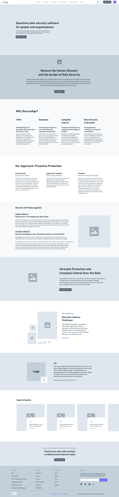
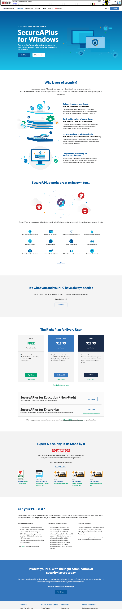

SecureAge Technology · 2020–2021
Website redesign for a cybersecurity company
- Client
- SecureAge Technology
- Role
- Creative Designer / Project Manager
- Year
- 2020–2021
About the project
SecureAge, a data security company based in Singapore, redesigned its website as part of its global expansion strategy. Post-launch, traffic and engagement increased — supported by marketing campaigns — establishing a scalable foundation for future growth.
My role
I served as project lead, managing the full redesign from end to end. This included hiring and directing UX and development agencies, project management, budget planning, design direction, and daily coordination with internal teams and external partners.
Background
As part of its global expansion, the company needed a website that could support scalability, clear product communication, and a high standard of brand credibility. However, the existing site had been built internally and was no longer sufficient to support growing business and marketing needs. This created the need for a strategic redesign involving external partners and cross-functional collaboration.
Design process
Agency hiring & alignment
I identified, vetted, and onboarded UX and development agencies, defining scope, deliverables, and timelines while aligning them with user needs, business goals, and brand strategy.
Research
Internal: Conducted stakeholder interviews across sales, product, support, and leadership, and analyzed analytics/CRM data to define target users and key behaviors.
External: Collaborated with the agency through workshops to define personas and customer journeys.
Information architecture & wireframing
I worked with the UX agency to define information architecture and key user flows, providing feedback on wireframes and directly creating key wireframes when needed. I also facilitated stakeholder workshops to validate direction and ensure alignment.
Visual design
We established a cohesive visual direction based on core brand values, iterating closely with the agency. I guided visual direction, contributed to key UI decisions (e.g. icon styles, layout patterns), and ensured alignment between design and content.
Cross-team coordination
Once the structure was defined, I collaborated closely with marketing (product managers), SEO specialists, the content agency, IT support, and product teams. I acted as the central liaison, ensuring alignment on priorities, timelines, and execution across all stakeholders.

Key problems
- Poor product presentation & navigation. Users struggled to understand key offerings and navigate the site effectively.
- Lack of audience focus. Content did not address the needs of core users such as IT professionals and decision-makers.
- Weak brand identity. Messaging and visuals failed to communicate the company’s value and credibility.
- Fragmented experiences. Separate B2B and B2C websites created inconsistency and confusion.
Solutions
1. Improved product structure & navigation
Improved product navigation by highlighting our main products and reducing the prominence of hardware products. I also restructured the product overview page to clearly communicate the relationships between products and the services we provide.
2. New ‘Solutions’ section
Created tailored content by industry, company size, and compliance needs (e.g. GDPR, HIPAA), supported by use cases and resources.
3. ‘Our Technology’ page
Introduced in-depth technical content by adding an ‘Our Technology’ page to establish credibility with expert users.
4. B2B & B2C integration
Unified previously separate websites (main website and B2C) into a single platform, reducing confusion and enabling cross-selling.
5. More realistic product representation
Replaced illustrative visuals with real product UI to improve clarity and trust.

Iteration
Right after launching, we continued to improve the website by testing new landing-page messages, introducing new CTAs, and enhancing the form submission flow. We monitored these changes using Google Analytics and Freshmarketer for A/B testing, heat maps, and screen recordings.
For example, I used Screen Replay in Freshmarketer to identify that users were spending too much time selecting their country of residence when submitting forms — and we fixed this by adding a search function.
Impact
Within three months of launch, traffic and engagement rose sharply — supported by marketing campaigns — establishing a scalable foundation for the company’s continued global growth.
Reflection
This project strengthened my ability to lead complex, multi-stakeholder projects end-to-end. Beyond contributing to UX decisions, the biggest impact came from aligning agencies and internal teams around a shared strategy, ensuring consistency across design, content, and development.
It also highlighted how a well-structured website is not just a design output, but a strategic foundation for marketing, product communication, and future growth. Managing shifting priorities — such as product changes and rebranding — further developed my ability to navigate ambiguity and drive execution in uncertain environments.